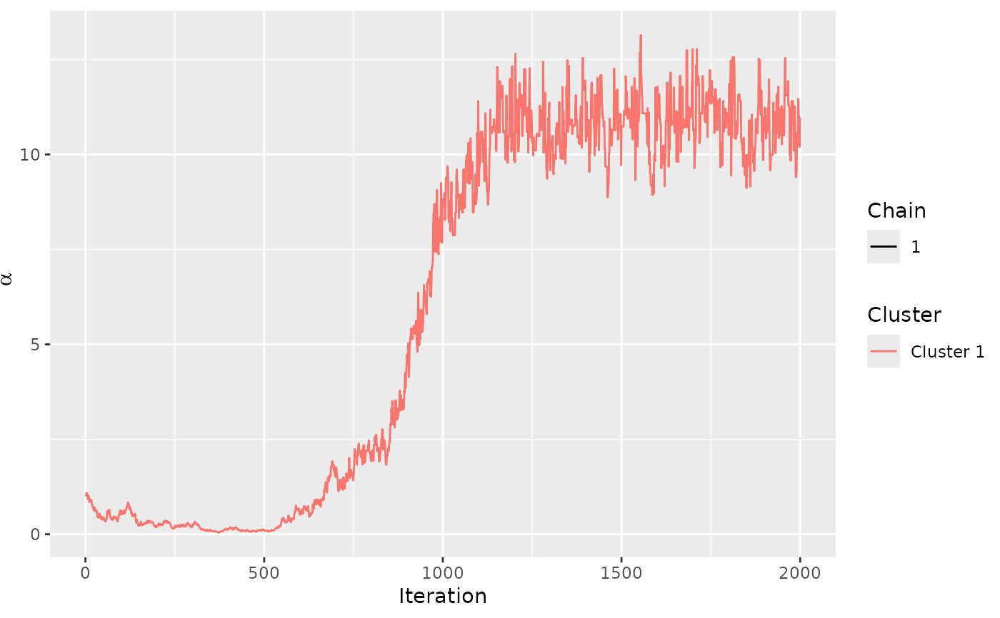
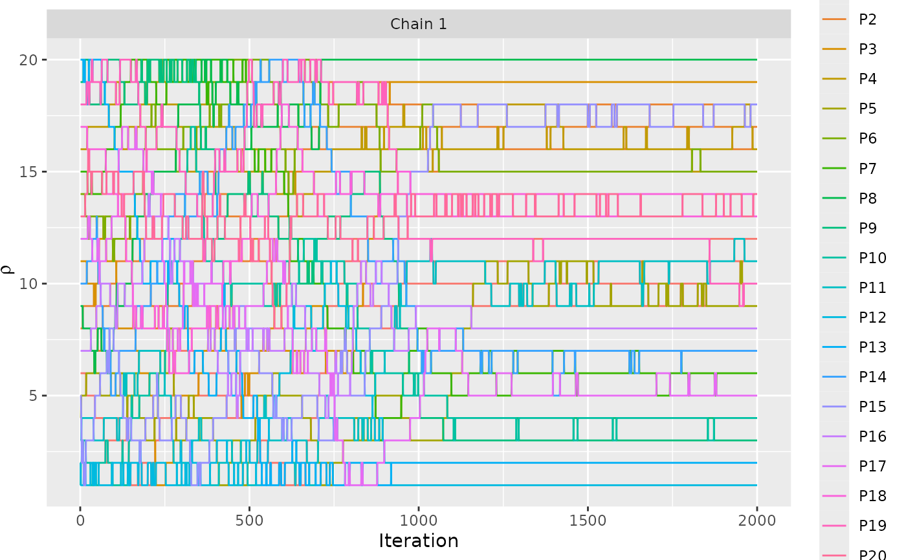

assess_convergence provides trace plots for the parameters of the Mallows
Rank model, in order to study the convergence of the Metropolis-Hastings
algorithm.
Usage
assess_convergence(model_fit, ...)
# S3 method for class 'BayesMallows'
assess_convergence(
model_fit,
parameter = c("alpha", "rho", "Rtilde", "cluster_probs", "theta"),
items = NULL,
assessors = NULL,
...
)
# S3 method for class 'BayesMallowsMixtures'
assess_convergence(
model_fit,
parameter = c("alpha", "cluster_probs"),
items = NULL,
assessors = NULL,
...
)Arguments
- model_fit
A fitted model object of class
BayesMallowsreturned fromcompute_mallows()or an object of classBayesMallowsMixturesreturned fromcompute_mallows_mixtures().- ...
Other arguments passed on to other methods. Currently not used.
- parameter
Character string specifying which parameter to plot. Available options are
"alpha","rho","Rtilde","cluster_probs", or"theta".- items
The items to study in the diagnostic plot for
rho. Either a vector of item names, corresponding tomodel_fit$data$itemsor a vector of indices. If NULL, five items are selected randomly. Only used whenparameter = "rho"orparameter = "Rtilde".- assessors
Numeric vector specifying the assessors to study in the diagnostic plot for
"Rtilde".
Examples
set.seed(1)
# Fit a model on the potato_visual data
mod <- compute_mallows(setup_rank_data(potato_visual))
# Check for convergence
assess_convergence(mod)

assess_convergence(mod, parameter = "rho", items = 1:20)
